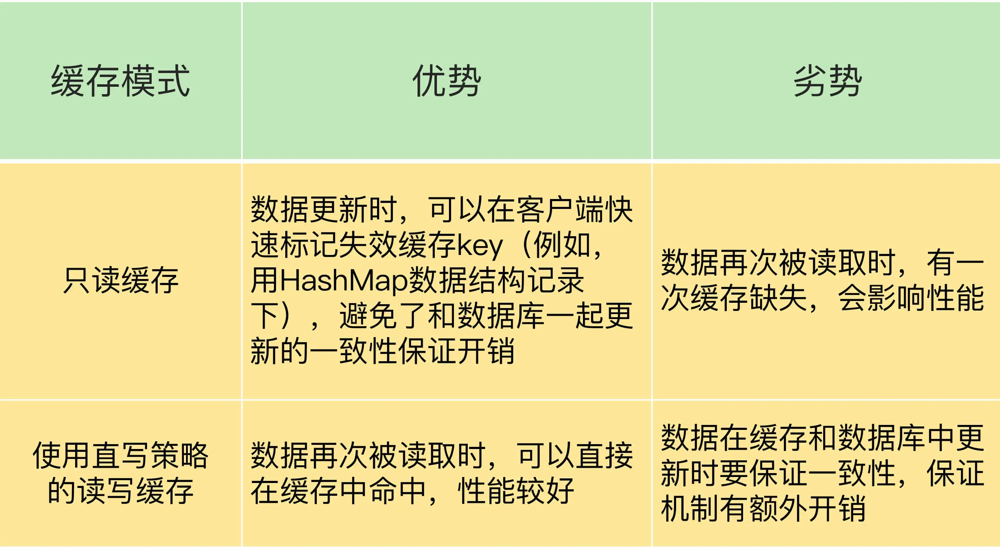

- 00 开篇词 这样学Redis，才能技高一筹.md
- 01 基本架构：一个键值数据库包含什么？.md
- 02 数据结构：快速的Redis有哪些慢操作？.md
- 03 高性能IO模型：为什么单线程Redis能那么快？.md
- 04 AOF日志：宕机了，Redis如何避免数据丢失？.md
- 05 内存快照：宕机后，Redis如何实现快速恢复？.md
- 06 数据同步：主从库如何实现数据一致？.md
- 07 哨兵机制：主库挂了，如何不间断服务？.md
- 08 哨兵集群：哨兵挂了，主从库还能切换吗？.md
- 09 切片集群：数据增多了，是该加内存还是加实例？.md
- 10 第1～9讲课后思考题答案及常见问题答疑.md
- 11 “万金油”的String，为什么不好用了？.md
- 12 有一亿个keys要统计，应该用哪种集合？.md
- 13 GEO是什么？还可以定义新的数据类型吗？.md
- 14 如何在Redis中保存时间序列数据？.md
- 15 消息队列的考验：Redis有哪些解决方案？.md
- 16 异步机制：如何避免单线程模型的阻塞？.md
- 17 为什么CPU结构也会影响Redis的性能？.md
- 18 波动的响应延迟：如何应对变慢的Redis？（上）.md
- 19 波动的响应延迟：如何应对变慢的Redis？（下）.md
- 20 删除数据后，为什么内存占用率还是很高？.md
- 21 缓冲区：一个可能引发“惨案”的地方.md
- 22 第11～21讲课后思考题答案及常见问题答疑.md
- 23 旁路缓存：Redis是如何工作的？.md
- 24 替换策略：缓存满了怎么办？.md
- 25 缓存异常（上）：如何解决缓存和数据库的数据不一致问题？.md
- 26 缓存异常（下）：如何解决缓存雪崩、击穿、穿透难题？.md
- 27 缓存被污染了，该怎么办？.md
- 28 Pika：如何基于SSD实现大容量Redis？.md
- 29 无锁的原子操作：Redis如何应对并发访问？.md
- 30 如何使用Redis实现分布式锁？.md
- 31 事务机制：Redis能实现ACID属性吗？.md
- 32 Redis主从同步与故障切换，有哪些坑？.md
- 33 脑裂：一次奇怪的数据丢失.md
- 34 第23~33讲课后思考题答案及常见问题答疑.md
- 35 Codis VS Redis Cluster：我该选择哪一个集群方案？.md
- 36 Redis支撑秒杀场景的关键技术和实践都有哪些？.md
- 37 数据分布优化：如何应对数据倾斜？.md
- 38 通信开销：限制Redis Cluster规模的关键因素.md
- 39 Redis 6.0的新特性：多线程、客户端缓存与安全.md
- 40 Redis的下一步：基于NVM内存的实践.md
- 41 第35～40讲课后思考题答案及常见问题答疑.md
- 加餐 01 经典的Redis学习资料有哪些？.md
- 加餐 02 用户Kaito：我是如何学习Redis的？.md
- 加餐 03 用户Kaito：我希望成为在压力中成长的人.md
- 加餐 04 Redis客户端如何与服务器端交换命令和数据？.md
- 加餐 05 Redis有哪些好用的运维工具？.md
- 加餐 06 Redis的使用规范小建议.md
- 加餐 07 从微博的Redis实践中，我们可以学到哪些经验？.md
- 结束语 从学习Redis到向Redis学习.md
34 第23~33讲课后思考题答案及常见问题答疑
今天，又到了我们的答疑时间，我们一起来学习下第 23～33 讲的课后思考题。同时，我还会给你讲解两道典型问题。
课后思考题答案
第 23 讲
问题：Redis 的只读缓存和使用直写策略的读写缓存，都会把数据同步写到后端数据库中，你觉得它们有什么区别吗？
答案：主要的区别在于，当有缓存数据被修改时，在只读缓存中，业务应用会直接修改数据库，并把缓存中的数据标记为无效；而在读写缓存中，业务应用需要同时修改缓存和数据库。
我把这两类缓存的优劣势汇总在一张表中，如下所示：

第 24 讲
问题：Redis 缓存在处理脏数据时，不仅会修改数据，还会把它写回数据库。我们在前面学过 Redis 的只读缓存模式和两种读写缓存模式（带同步直写的读写模式，带异步写回的读写模式）），请你思考下，Redis 缓存对应哪一种或哪几种模式？
答案：如果我们在使用 Redis 缓存时，需要把脏数据写回数据库，这就意味着，Redis 中缓存的数据可以直接被修改，这就对应了读写缓存模式。更进一步分析的话，脏数据是在被替换出缓存时写回后端数据库的，这就对应了带有异步写回策略的读写缓存模式。
第 25 讲
问题：在只读缓存中对数据进行删改时，需要在缓存中删除相应的缓存值。如果在这个过程中，我们不是删除缓存值，而是直接更新缓存的值，你觉得，和删除缓存值相比，直接更新缓存值有什么好处和不足吗？
答案：如果我们直接在缓存中更新缓存值，等到下次数据再被访问时，业务应用可以直接从缓存中读取数据，这是它的一大好处。
不足之处在于，当有数据更新操作时，我们要保证缓存和数据库中的数据是一致的，这就可以采用我在第 25 讲中介绍的重试或延时双删方法。不过，这样就需要在业务应用中增加额外代码，有一定的开销。
第 26 讲
问题：在讲到缓存雪崩时，我提到，可以采用服务熔断、服务降级、请求限流三种方法来应对。请你思考下，这三个方法可以用来应对缓存穿透问题吗？
答案：关于这个问题，@徐培同学回答得特别好，他看到了缓存穿透的本质，也理解了穿透和缓存雪崩、击穿场景的区别，我再来回答一下这个问题。
缓存穿透这个问题的本质是查询了 Redis 和数据库中没有的数据，而服务熔断、服务降级和请求限流的方法，本质上是为了解决 Redis 实例没有起到缓存层作用的问题，缓存雪崩和缓存击穿都属于这类问题。
在缓存穿透的场景下，业务应用是要从 Redis 和数据库中读取不存在的数据，此时，如果没有人工介入，Redis 是无法发挥缓存作用的。
一个可行的办法就是事前拦截，不让这种查询 Redis 和数据库中都没有的数据的请求发送到数据库层。
使用布隆过滤器也是一个方法，布隆过滤器在判别数据不存在时，是不会误判的，而且判断速度非常快，一旦判断数据不存在，就立即给客户端返回结果。使用布隆过滤器的好处是既降低了对 Redis 的查询压力，也避免了对数据库的无效访问。
另外，这里，有个地方需要注意下，对于缓存雪崩和击穿问题来说，服务熔断、服务降级和请求限流这三种方法属于有损方法，会降低业务吞吐量、拖慢系统响应、降低用户体验。不过，采用这些方法后，随着数据慢慢地重新填充回 Redis，Redis 还是可以逐步恢复缓存层作用的。
第 27 讲
问题：使用了 LFU 策略后，缓存还会被污染吗？
答案：在 Redis 中，我们使用了 LFU 策略后，还是有可能发生缓存污染的。@yeek 回答得不错，我给你分享下他的答案。
在一些极端情况下，LFU 策略使用的计数器可能会在短时间内达到一个很大值，而计数器的衰减配置项设置得较大，导致计数器值衰减很慢，在这种情况下，数据就可能在缓存中长期驻留。例如，一个数据在短时间内被高频访问，即使我们使用了 LFU 策略，这个数据也有可能滞留在缓存中，造成污染。
第 28 讲
问题：这节课，我向你介绍的是使用 SSD 作为内存容量的扩展，增加 Redis 实例的数据保存量，我想请你来聊一聊，我们可以使用机械硬盘来作为实例容量扩展吗？有什么好处或不足吗？
答案：这道题有不少同学（例如 @Lemon、@Kaito）都分析得不错，我再来总结下使用机械硬盘的优劣势。
从容量维度来看，机械硬盘的性价比更高，机械硬盘每 GB 的成本大约在 0.1 元左右，而 SSD 每 GB 的成本大约是 0.4~0.6 元左右。
从性能角度来看，机械硬盘（例如 SAS 盘）的延迟大约在 3~5ms，而企业级 SSD 的读延迟大约是 60~80us，写延迟在 20us。缓存的负载特征一般是小粒度数据、高并发请求，要求访问延迟低。所以，如果使用机械硬盘作为 Pika 底层存储设备的话，缓存的访问性能就会降低。
所以，我的建议是，如果业务应用需要缓存大容量数据，但是对缓存的性能要求不高，就可以使用机械硬盘，否则最好是用 SSD。
第 29 讲
问题：Redis 在执行 Lua 脚本时，是可以保证原子性的，那么，在课程里举的 Lua 脚本例子（lua.script）中，你觉得是否需要把读取客户端 ip 的访问次数，也就是 GET(ip)，以及判断访问次数是否超过 20 的判断逻辑，也加到 Lua 脚本中吗？代码如下所示：
local current
current = redis.call("incr",KEYS[1])
if tonumber(current) == 1 then
redis.call("expire",KEYS[1],60)
end
答案：在这个例子中，要保证原子性的操作有三个，分别是 INCR、判断访问次数是否为 1 和设置过期时间。而对于获取 IP 以及判断访问次数是否超过 20 这两个操作来说，它们只是读操作，即使客户端有多个线程并发执行这两个操作，也不会改变任何值，所以并不需要保证原子性，我们也就不用把它们放到 Lua 脚本中了。
第 30 讲
问题：在课程里，我提到，我们可以使用 SET 命令带上 NX 和 EX/PX 选项进行加锁操作，那么，我们是否可以用下面的方式来实现加锁操作呢？
// 加锁
SETNX lock_key unique_value
EXPIRE lock_key 10S
// 业务逻辑
DO THINGS
答案：如果使用这个方法实现加锁的话，SETNX 和 EXPIRE 两个命令虽然分别完成了对锁变量进行原子判断和值设置，以及设置锁变量的过期时间的操作，但是这两个操作一起执行时，并没有保证原子性。
如果在执行了 SETNX 命令后，客户端发生了故障，但锁变量还没有设置过期时间，就无法在实例上释放了，这就会导致别的客户端无法执行加锁操作。所以，我们不能使用这个方法进行加锁。
第 31 讲
问题：在执行事务时，如果 Redis 实例发生故障，而 Redis 使用的是 RDB 机制，那么，事务的原子性还能得到保证吗？
答案：当 Redis 采用 RDB 机制保证数据可靠性时，Redis 会按照一定的周期执行内存快照。
一个事务在执行过程中，事务操作对数据所做的修改并不会实时地记录到 RDB 中，而且，Redis 也不会创建 RDB 快照。我们可以根据故障发生的时机以及 RDB 是否生成，分成三种情况来讨论事务的原子性保证。
- 假设事务在执行到一半时，实例发生了故障，在这种情况下，上一次 RDB 快照中不会包含事务所做的修改，而下一次 RDB 快照还没有执行。所以，实例恢复后，事务修改的数据会丢失，事务的原子性能得到保证。
- 假设事务执行完成后，RDB 快照已经生成了，如果实例发生了故障，事务修改的数据可以从 RDB 中恢复，事务的原子性也就得到了保证。
- 假设事务执行已经完成，但是 RDB 快照还没有生成，如果实例发生了故障，那么，事务修改的数据就会全部丢失，也就谈不上原子性了。
第 32 讲
问题：在主从集群中，我们把 slave-read-only 设置为 no，让从库也能直接删除数据，以此来避免读到过期数据。你觉得，这是一个好方法吗？
答案：这道题目的重点是，假设从库也能直接删除过期数据的话（也就是执行写操作），是不是一个好方法？其实，我是想借助这道题目提醒你，主从复制中的增删改操作都需要在主库执行，即使从库能做删除，也不要在从库删除，否则会导致数据不一致。
例如，主从库上都有 a:stock 的键，客户端 A 给主库发送一个 SET 命令，修改 a:stock 的值，客户端 B 给从库发送了一个 SET 命令，也修改 a:stock 的值，此时，相同键的值就不一样了。所以，如果从库具备执行写操作的功能，就会导致主从数据不一致。
@Kaito 同学在留言区对这道题做了分析，回答得很好，我稍微整理下，给你分享下他的留言。
即使从库可以删除过期数据，也还会有不一致的风险，有两种情况。
第一种情况是，对于已经设置了过期时间的 key，主库在 key 快要过期时，使用 expire 命令重置了过期时间，例如，一个 key 原本设置为 10s 后过期，在还剩 1s 就要过期时，主库又用 expire 命令将 key 的过期时间设置为 60s 后。但是，expire 命令从主库传输到从库时，由于网络延迟导致从库没有及时收到 expire 命令（比如延后了 3s 从库才收到 expire 命令），所以，从库按照原定的过期时间删除了过期 key，这就导致主从数据不一致了。
第二种情况是，主从库的时钟不同步，导致主从库删除时间不一致。
另外，当 slave-read-only 设置为 no 时，如果在从库上写入的数据设置了过期时间，Redis 4.0 前的版本不会删除过期数据，而 Redis 4.0 及以上版本会在数据过期后删除。但是，对于主库同步过来的带有过期时间的数据，从库仍然不会主动进行删除。
第 33 讲
问题：假设我们将 min-slaves-to-write 设置为 1，min-slaves-max-lag 设置为 15s，哨兵的 down-after-milliseconds 设置为 10s，哨兵主从切换需要 5s，而主库因为某些原因卡住了 12s。此时，还会发生脑裂吗？主从切换完成后，数据会丢失吗？
答案：主库卡住了 12s，超过了哨兵的 down-after-milliseconds 10s 阈值，所以，哨兵会把主库判断为客观下线，开始进行主从切换。因为主从切换需要 5s，在主从切换过程中，原主库恢复正常。min-slaves-max-lag 设置的是 15s，而原主库在卡住 12s 后就恢复正常了，所以没有被禁止接收请求，客户端在原主库恢复后，又可以发送请求给原主库。一旦在主从切换之后有新主库上线，就会出现脑裂。如果原主库在恢复正常后到降级为从库前的这段时间内，接收了写操作请求，那么，这些数据就会丢失了。
典型问题答疑
在第 23 讲中，我们学习了 Redis 缓存的工作原理，我提到了 Redis 是旁路缓存，而且可以分成只读模式和读写模式。我看到留言区有一些共性问题：如何理解 Redis 属于旁路缓存？Redis 通常会使用哪种模式？现在，我来解释下这两个问题。
如何理解把 Redis 称为旁路缓存？
有同学提到，平时看到的旁路缓存是指，写请求的处理方式是直接更新数据库，并删除缓存数据；而读请求的处理方式是查询缓存，如果缓存缺失，就读取数据库，并把数据写入缓存。那么，课程中说的“Redis 属于旁路缓存”是这个意思吗？
其实，这位同学说的是典型的只读缓存的特点。而我把 Redis 称为旁路缓存，更多的是从“业务应用程序如何使用 Redis 缓存”这个角度来说的。业务应用在使用 Redis 缓存时，需要在业务代码中显式地增加缓存的操作逻辑。
例如，一个基本的缓存操作就是，一旦发生缓存缺失，业务应用需要自行去读取数据库，而不是缓存自身去从数据库中读取数据再返回。
为了便于你理解，我们再来看下和旁路缓存相对应的、计算机系统中的 CPU 缓存和 page cache。这两种缓存默认就在应用程序访问内存和磁盘的路径上，我们写的应用程序都能直接使用这两种缓存。
我之所以强调 Redis 是一个旁路缓存，也是希望你能够记住，在使用 Redis 缓存时，我们需要修改业务代码。
使用 Redis 缓存时，应该用哪种模式？
我提到，通用的缓存模式有三种：只读缓存模式、采用同步直写策略的读写缓存模式、采用异步写回策略的读写缓存模式。
一般情况下，我们会把 Redis 缓存用作只读缓存。只读缓存涉及的操作，包括查询缓存、缓存缺失时读数据库和回填，数据更新时删除缓存数据，这些操作都可以加到业务应用中。而且，当数据更新时，缓存直接删除数据，缓存和数据库的数据一致性较为容易保证。
当然，有时我们也会把 Redis 用作读写缓存，同时采用同步直写策略。在这种情况下，缓存涉及的操作也都可以加到业务应用中。而且，和只读缓存相比有一个好处，就是数据修改后的最新值可以直接从缓存中读取。
对于采用异步写回策略的读写缓存模式来说，缓存系统需要能在脏数据被淘汰时，自行把数据写回数据库，但是，Redis 是无法实现这一点的，所以我们使用 Redis 缓存时，并不采用这个模式。
小结
好了，这次的答疑就到这里。如果你在学习的过程中遇到了什么问题，欢迎随时给我留言。
最后，我想说，“学而不思则罔，思而不学则殆”。你平时在使用 Redis 的时候，不要局限于你眼下的问题，你要多思考问题背后的原理，积累相应的解决方案。当然，在学习课程里的相关操作和配置时，也要有意识地亲自动手去实践。只有学思结合，才能真正提升你的 Redis 实战能力。
© 2019 - 2023 Liangliang Lee. Powered by Vert.x and hexo-theme-book.